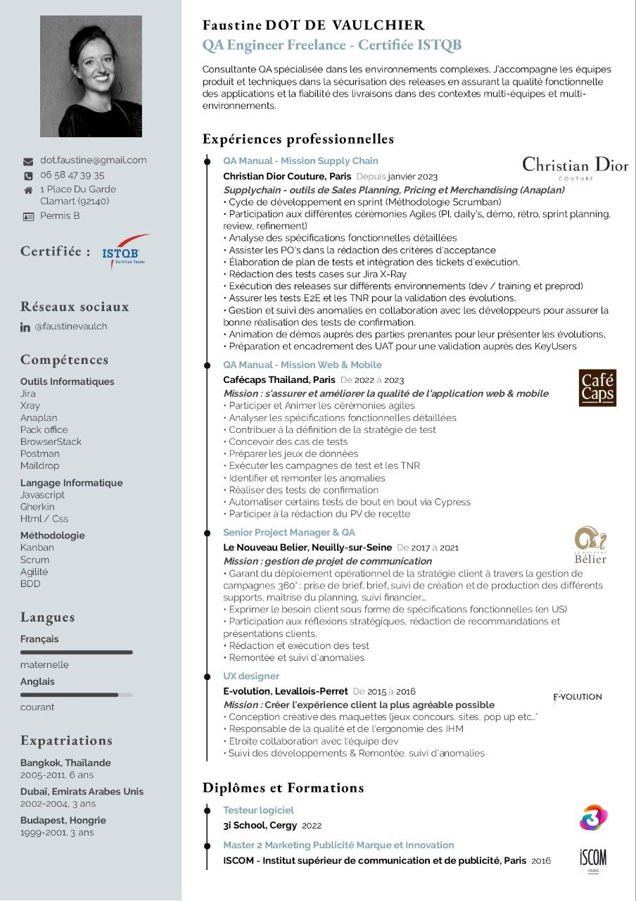

QA Engineer Freelance
Consultante QA spécialisée dans les environnements complexes. J'accompagne les équipes produit et techniques dans la sécurisation des releases en assurant la qualité fonctionnelle des applications et la fiabilité des livraisons dans des contextes multi-équipes et multi-environnements.